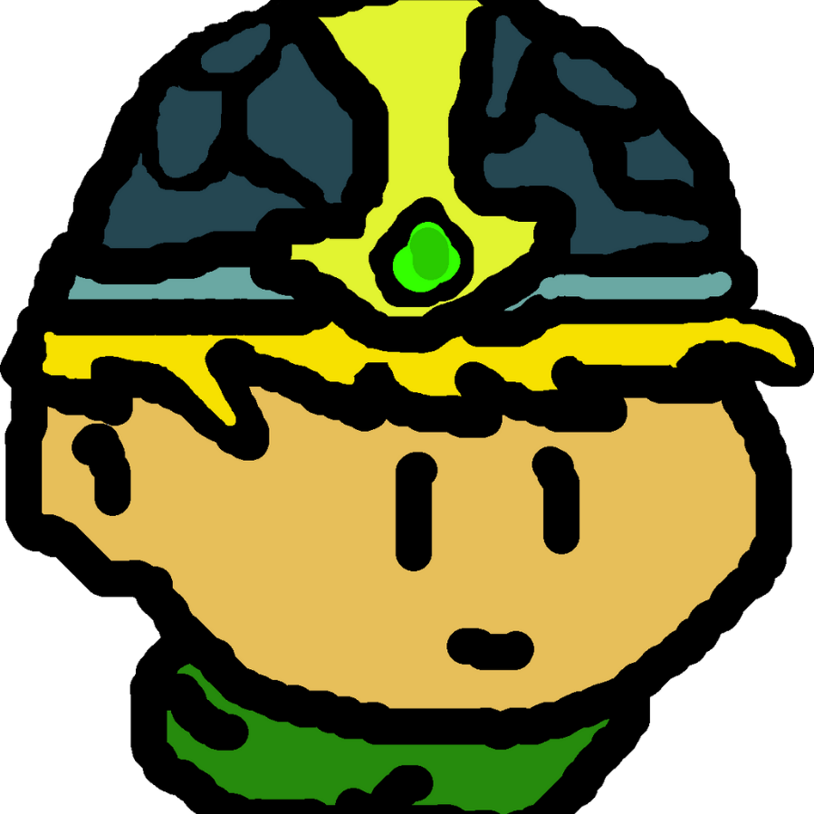
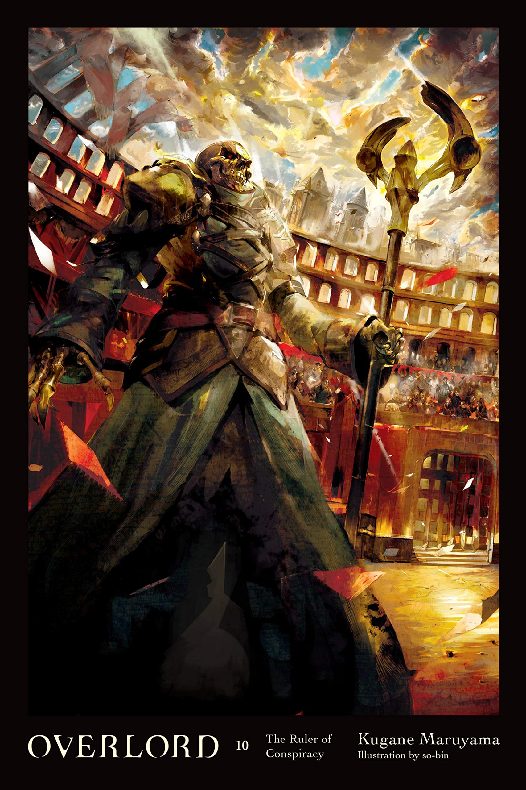
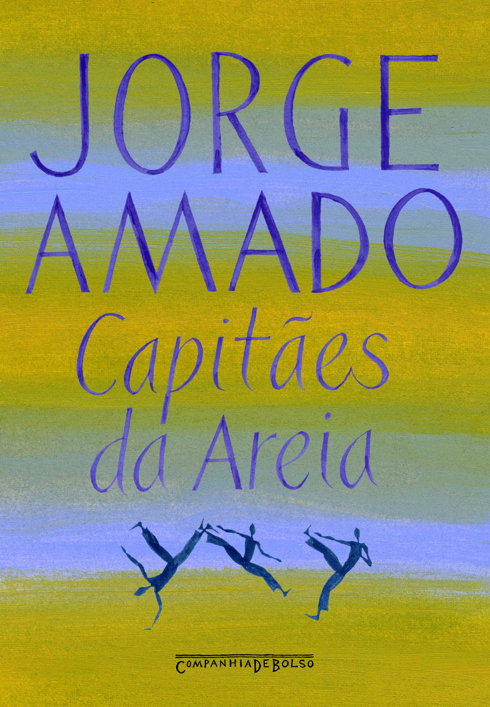

1 - BIOGRAFIA
1.1 - Introdução
Meu nome é Matheus Teles de Andrade, tenho 18 anos. Acima você pode ver uma linha cronológica da minha aparência (deixe o mouse em cima da imagem para ver o ano). Bem, simplificando tive uma infância normal, exceto pelo fato de que fui inserido na escola com um ano de atraso, o motivo foi que eu nasci depois do meio do ano (eu era considerado novo demais), então entrei no terceiro ano do ensino médio com um ano a mais do que a maioria...
1.2 - Ensino Básico
Cursei minha vida inteira em escolas públicas: começando pela escola Chapeuzinho Vermelho (da pré escola até o terceiro ano do fundamental) que era e continua sendo o local de trabalho de minha mãe; depois fui para o Eva dos Santos (do quarto ano até o quinto ano do fundamental); para o Imigrantes, onde eu estudei durante uma semana a sexta série; no Colégio Tiradentes da Polícia Militar III (ou só CTPM3), onde estudei da sexta até a nona série, estudando online na sétima e oitava série.
1.3 - IFRO
Entrei em 2023 no Instituto Federal de Rondônia para cursar integralmente ao ensino médio o curso de "Técnico em Informática". Em 2026 iniciei o curso de graduação "Tecnólogo em Análise e Desenvolvimento de Sistemas".
2 - PROJETOS


2.1 - Persona Web
Foi uma atividade avaliativa para a criação de uma landpage de um personagem que conhecíamos. Incluí no projeto um subprojeto de um videoplayer personalizado, usando apenas HTML5, CSS3 e JS.
Dê uma olhada: Projeto Persona Web
2.2 - VideoPlayer
Um projeto que fiz pensando em agregar profundidade ao projeto Persona Web, inclui funções de alteração de velocidade, download, picture in picture, legendas e até loop.
Dê uma olhada: Projeto Video Player
2.3 - Jogo da Velha
Um projeto que fiz para testar a tríade do frontend no quesito jogos simples, este jogo da velha apesar de ter um "modo vs IA", na verdade é só um Javascript tentando achar uma jogada...
Dê uma olhada: Jogo da Velha
2.4 - One Piece LandPage
Este é um projeto que fiz através de um intensivo de programação web com os gêmeos do canal Dev em Dobro. Um grande aprendizado sobre a estruturação do HTML.
Dê uma olhada: One Piece Landpage
2.5 - Pokedex Versão Fantasma
Este foi um projeto que fiz para uma atividade de programação web em que deveríamos nos conectar com uma API de pokemon daonde tirariamos informações e imagens dos pokemons. A página foi feita usando Node.js e Typescript com estilização via Vue.js. Infelizmente, não sei como fazer o github pages funcionar com o Node.js, então o link abaixo te redirecionará para o meu repositório, divirta-se.
Dê uma olhada no repositório: Repositório da Pokedex
3 - HOBBIES




3.1 - Informática
É fato de que eu comecei a pesquisar mais sobre tecnologia e informática durante os estudos no IFRO, achei os assuntos muito interessantes e estou fazendo um esforço para aprender mais, isso me dá uma boa visão do que eu sou bom na área e quais caminhos eu posso seguir na cidade em que cresci ou em outro lugar. Em suma eu fico assistindo videos sobre o assunto e programando alguma coisa em html para passar o tempo. Aquele desenho do personagem com capacete foi feito por mim com o GIMP, enquanto testava o Sistema Operacional "Zorin OS".
3.2 - Leitura
Em questões de leitura eu não chego a ser um amante, eu curto ler light novels e alguns clássicos da literatura, mas eu posso citar aqui um livro que dizem ter sido um dos motivos pelo reavivamento do Japão após fazer parte do lado perdedor da Segunda Guerra Mundial, que é "O Livro dos Cinco Anéis" do samurai de duas espadas Miyamoto Musashi, as suas estratégias de combate foram implementadas no âmbito empreendedor assim como outros diversos conhecimentos antepassados do país. Sobre as Light Novels, eu já li algumas obras japonesas isekai como "Overlord" e "Mushoku Tensei" além da obra sul coreana The Begnning After The End. Também leio bastante webtoons, a versão webtoon de "The Begnning After The End", a obra "Leviathan", "Latna Saga"... Agora, falando sobre literatura clássica, posso citar A Metamorfose de Franz Kafka e Capitães da Areia de Jorge Amado, por mais diferentes que sejam, senti que ambos tentam expressar algo sobre a psique humana.